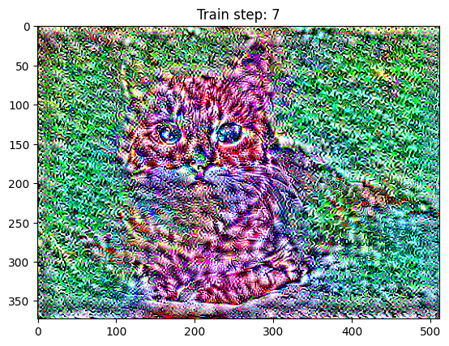
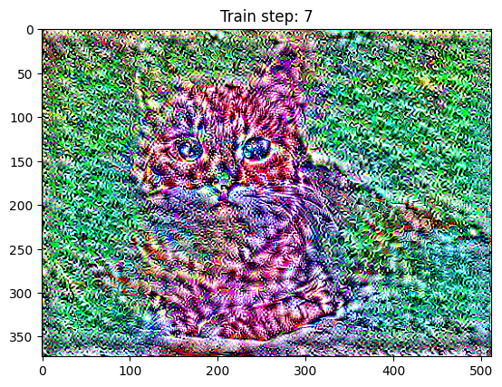
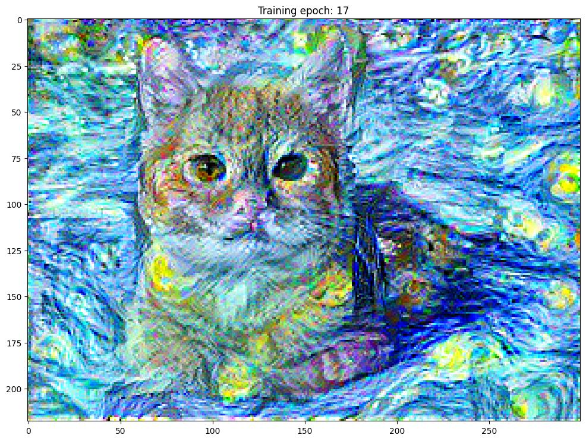
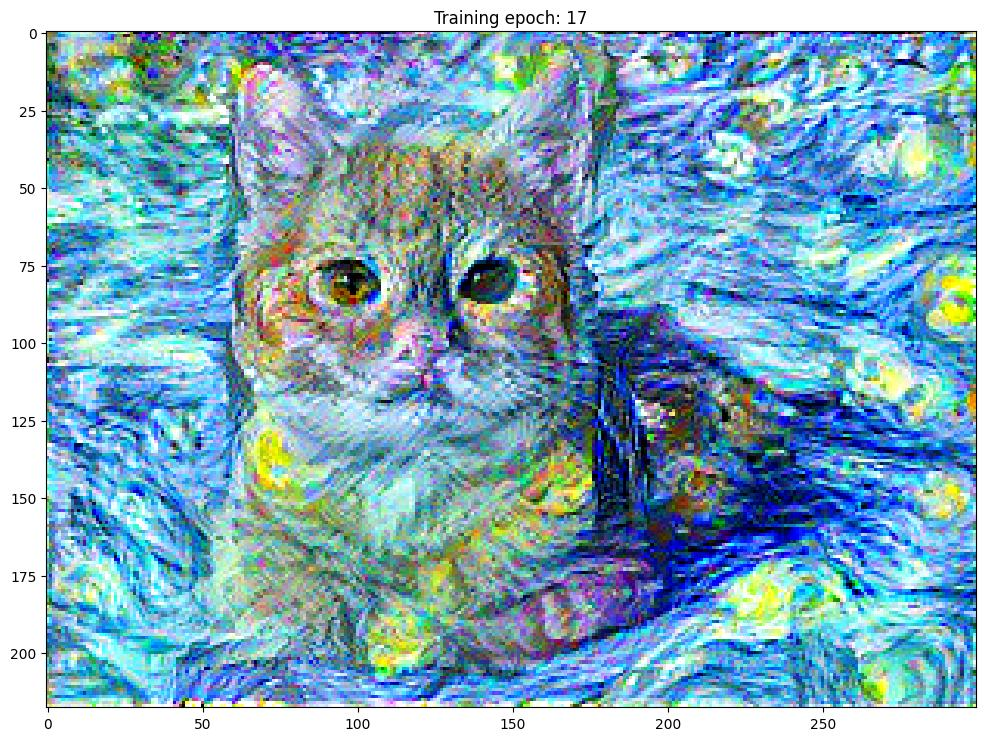
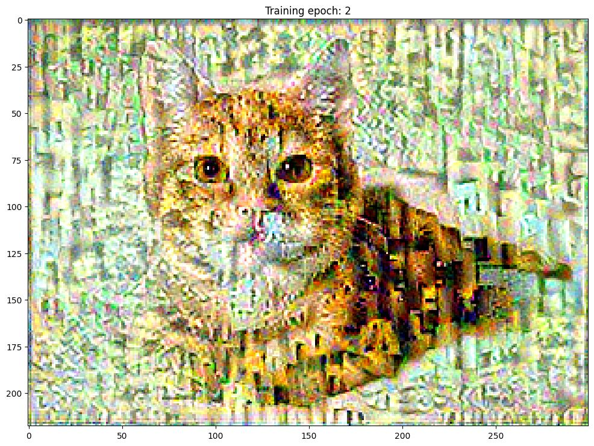
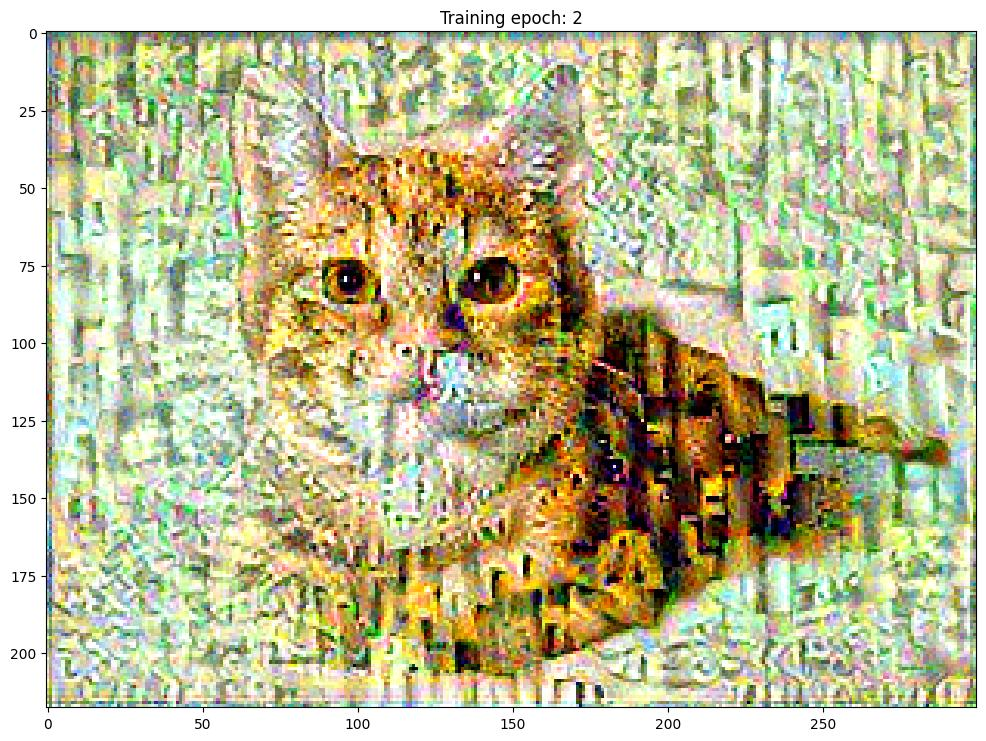

I started by loading in the style and content images as tensorflow variables.
Following the paper, I retrieved style layers and content layers from the pretrained VGG19 ImageNet model. The paper said that their model achieved slightly better results by using average pooling instead of max pooling, so I added this parameter when retreiving the model layers.
Style Layers: ['block1_conv1', 'block2_conv1', 'block3_conv1', 'block4_conv1', 'block5_conv1']
Content Layers: ['block1_conv1', 'block2_conv1', 'block3_conv1']
Then, I created an ArtisticCNN class that inherited from tf.keras.models.Model. This model stores the style_outputs (with each value multiplied by the gram matrix) and content_outputs. These values are later compared during training to style_targets, which is the style outputs of an ArtisticCNN model that is only trained on the style image, and content_targets, which is the content_outputs of an ArtisticCNN trained only on the content image.
The style loss and content loss are calculated and normalized separately, then added together to create total loss.
Additionally, I used an Adam optimizer. The paper suggests setting the ratio between the style weight and content
weight to \(10^{-3}\) for optimal results.
My final outputs used a smaller ratio of \(10^{-5}\)
(style_weight = \(10^{-2}\), content_weight = \(10^{3}\))
Here are some initial failed training attempts
Training Epochs: 7
Steps per Epoch: 100
Note: Figure titles should say "training epoch", not "training step"
Also started training from noise, since
 

style_weight = \(10^{-2}\)
content_weight = \(10^{3}\)
Training Epochs: 20
Steps per Epoch: 50
Learning Rate: 0.2

 

 



First I created a function that randomly samples and stitches together square patches of size patch_size. This is the simplest method but the results are suboptimal.
Below are sample images from two runs of this method.
out_size = 200
patch_size = 15
The quilt_simple function improves on the randomly sampled texture by overlaying patches that have the lowest SSD cost for the overlapping regions of the patches.
I created a template for the part of the output image to be filled in, a mask for the overlapping regions between the next patch and previous patch, then calculated this SSD for all possible random patches that could fill in this next part of the output image.
The best aligned image has the lowest cost. The tol variable dictates how much randomness to add when selecting the next patch. If tol=3, one of the three lowest cost patches will be chosen.
Here are some outputs for the quilt_simple() method on a brick wall texture, run with varying tol values.
out_size = 300
patch_size = 50
overlap = 20
Next, the quilt_cut function incorportes seam finding by calculating the min-cost contiguous path. The given cut function identifies a path through the overlapping image patch that has the lowest cost in terms of image difference.
Then I applied this mask to patches before blending the patches together. This creates a seamless effect that makes the boundaries less noticable.
Here are some outputs for the quilt_cut() method on a brick wall texture, one again run with varying tol values.
out_size = 300
patch_size = 50
overlap = 20
Here is a comparison that shows the improvements in seam blending with quilt_cut compared to quilt_simple.
Method 2 Quilt Simple (left) vs. Method 3 Quilt Cut (right)
out_size = 300
patch_size = 50
overlap = 20
tol = 5
out_size = 300
patch_size = 50
overlap = 20
Finally, I provide a guidance image to demonstrate texture transferring. This involves adding an additional cost term between the guidance image and texture image to find patches in the texture image that best match the corresponding guidance image patch in respect to both shape and intensity.
For each new patch, I added a guidance_ssd_matrix on top of the ssd_matrix (both weighted by 1-alpha and alpha respectively). Specifically, the guidance_ssd_matrix is another weighted cost term that calculates the ssd between the grayscale version of the texture and guidance image (used for matching shape), and the grayscaled blurred version of the images (used for matching intensity).

To match textures, I compared patches of grayscale blurred images and also grayscale original images
Grayscale and blurred images used for guidance image feature matching. Blurred with gaussian filter (sigma = 3).
Output: Yogurt texture transfered to Feynman
patch_size = 20
overlap = 2
alpha = 0.1
tol = 1
Output: Sketch texture transfered to Feynman
patch_size = 15
overlap = 4
alpha = 0.1
tol = 1

Output: Starry Night texture transfered to Marilyn Monroe
patch_size = 30
overlap = 6
alpha = 0.1
tol = 1
For the iterative technique, I use a decreasing patch_size and increasing alpha:
$$alpha = 0.1 + 0.8 * i / (n - 1)$$ $$patch\_size = patch\_size * 2^i // 3^i $$
Each iteration, I feed the previous image with larger patches into the next transfer method.
num_iterations = 3
patch_size = 50
Output:
alpha = 0.3
patch_size = 33
alpha = 0.5
patch_size = 14
alpha = 0.7
patch_size = 4
Side by Side Comparison (left original, middle iterative, right non-iterative)
The middle iterative method seems to capture general shapes and edges more accurately.
num_iterations = 3
patch_size = 50
Output:
alpha = 0.3
patch_size = 33

alpha = 0.5
patch_size = 14

Side by Side Comparison (left original, middle iterative, right non-iterative)